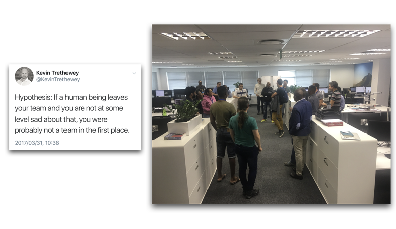
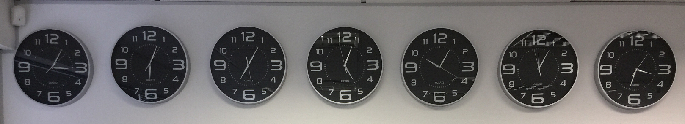
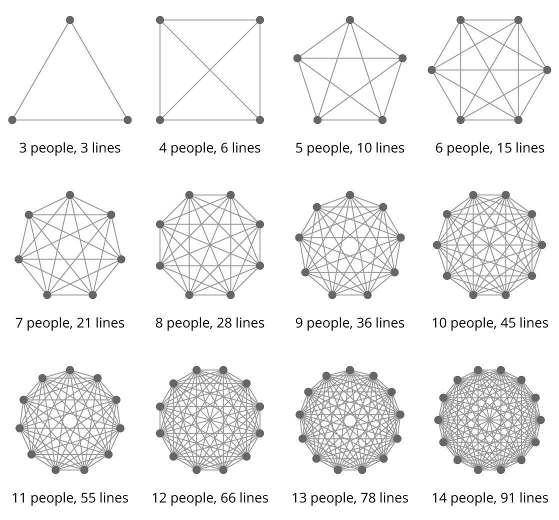

How do you create a great environment for developers?
5 things we're learning along the Jemstep journey
Introduction
In 2016 a small South African startup with 18 employees in total was acquired by Invesco, an investment management company with $970 billion Assets Under Management.
Two years later, and Jemstep has grown from a team of 18 people to about 90 people, on 4 continents.
Where we are now

Where we came from (2016)
- About 100,000 lines of Scala code
- About 60,000 lines of JavaScript/CSS/HTML
- Automated build pipelines
- Daily deployments, triggered by QA
- 12 people in South Africa: 5 developers, 3 testers, 1 DevOp, some investment specialists etc
- 6 people in Silicon Valley: CEO, CTO, Product Managers, UX, Customer Support
What we are learning about our Developer Experience
1. Unproductive time multiplies as squads grow

We created a dedicated “Developer Productivity” squad
Find Developer Pain-Points
Address Developer Pain-Points
2. Manual Developer onboarding does not scale
Onboarding needs to be fast, reproducible and stable.
- Lots of new developers joining our Sandton office
- Remote locations: California, Argentina, Peru, India
Onboarding experience in 2014
- Figure out what to download and install
- Figure out why something works on all other machines except yours
- Ask for random pieces of installation instructions as you hit errors
- Copy some required files from colleagues when you discover you need it
- Onboarding time: YMMV. Maybe 2 weeks.
We dockerized the developer environment
From 2015 our onboarding time went down from about 2 weeks to about 3 days.
Still not good enough
Containers are great, but there are still a lot of setup on the host that had to be done manually.
We created our own Linux build
USB stick in, Linux distro out.
We fully automated the developer environment setup
Ansible FTW
Onboarding experience in 2017
- Log in to a pre-installed custom Linux distro
- Run the developer setup ansible scripts
- Type in a password or so here and there
- Wait for some downloads to finish
- Deploy your first code to production
- OK, maybe not yet
- Onboarding time: less than a day
3. Adding developers reduces productivity
- New and novice developers need the attention of established developers
- Off-site squads are all new and novice, initially.
4. Multi-site development is technically complex

- More time zones
- Code quality and coding standards
- Keep doing daily deployments
We try to automate the technical aspects as far as possible
Compile-time static analysis
We like a functional programming style. Our compiler can detect a lot of that. WartRemover Scala plugin FTW.
The automated developer setup is really paying off in remote squads
5. Maintaining our startup culture as we grow is hard
Knowledge sharing among 5 vs 42 developers

We generally encourage pair-programming
We flew to meet the first remote developers in person
Code walkthroughs, product walkthroughs, developer environments
Remote pairing
Slack, Zoom, Git.
We still need to improve a lot here.
Everyday Slack messaging
Try to hear each other's voices as much as possible
- Frequent conference calls to the US, Argentina, Peru and India
- Weekly Scrums (teleconferences) - unblock each other
What we struggle with
Turn-around time for developing new features
- Road-blocks before we can merge, e.g. all tests must pass
- Build and tests takes about an hour
- Brittle Selenium acceptance tests
- 1 failure: wait another hour
Product managers and clients are in the USA
- XP principle: on-site custumer
- Knowledge gap: understanding new requirements
- Long turn-around time for questions
Product managers and clients are in the USA
- XP principle: on-site custumer
- Knowledge gap: understanding new requirements
- Long turn-around time for questions
Bi-weekly conference calls with US product managers - "office hours"
What are we focusing on now?
Effective Prioritisation
Single queue of work for all product squads
Technical Debt
Making sure we continually removing the things that slow us down
Technical Career Pathing
Create clear growth paths within software engineering
Where to next?
Grow
Collaborate. Deliver. Reflect. Repeat.
5 things we learned
- Treat Developer Productivity as a first-class concern
- Developer onboarding needs to be excellent
- Plan for decreased productivity when new people start
- Reduce complexity by automating repetitive tasks
- Change how you communicate as you grow
Questions?